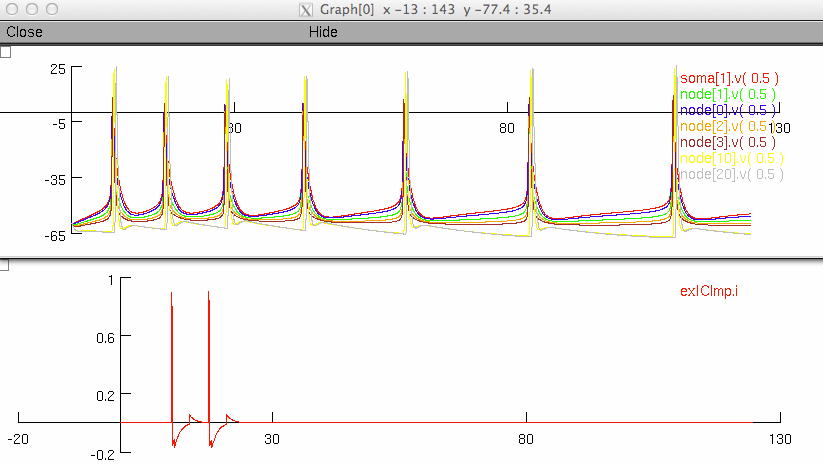

This is the readme for the model: Computational analysis of subthalamic nucleus and lenticular fasciculus activation during therapeutic deep brain stimulation. Miocinovic S, Parent M, Butson CR, Hahn PJ, Russo GS, Vitek JL, McIntyre CC. J Neurophysiol. 2006 Sep;96(3):1569-80. Epub 2006 May 31. This is a recreation of the author's simulations by Tom Foutz. Using Gillies STN model. main.hoc: Extracell. fem stim of multicompartment populations with GABAa synapse in soma (GABA conductance can be made 0 to 'remove synapse'). Uses fourier-derived stimulus waveform. FEM voltage Files are in folder fem_voltage. Please see the README.txt's in the folders fem_fourier_waveform and fem_voltage ModelDB administrator: A short demo run was added in case modeler's are interested in explorering the model specification through the gui. After compiling the mod files (mknrndll with mswin or mac, or nrnivmodl with unix/linux) excute mosinit.hoc by double clicking on it (mswin), or dragging and dropping it on the nrngui icon (mac), or typing nrngui mosinit.hoc (unix/linux). You can elect to run the short demo or the full run which will run main.hoc, by clicking on the appropriate button. If you select the short run in a few seconds you should see graphs like: 